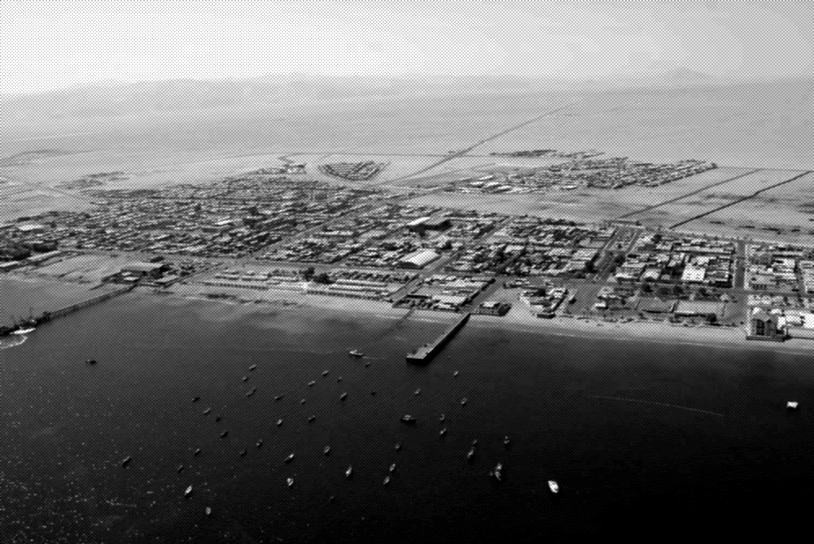
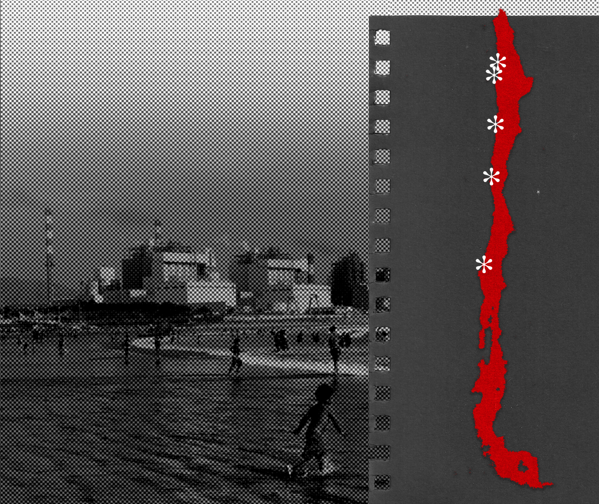
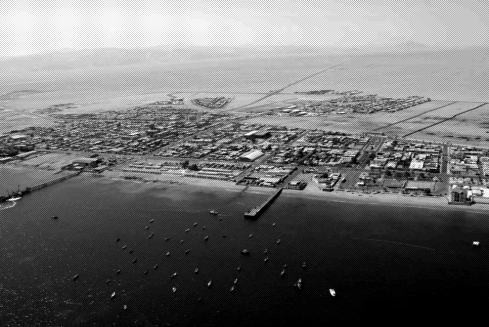
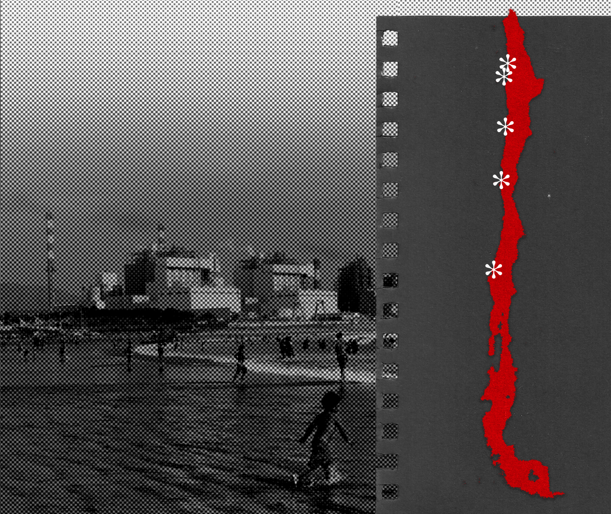

¿Qué son las zonas de sacrificio?
Son territorios que presentan focos de contaminación especialmente altos y sus habitantes ven su vida puesta en riesgo. Se cruzan la devastación ambiental y la pobreza de sus habitantes. En Chile el término ha sido utilizado por el mundo socio ambiental para mencionar los territorios más críticos en la falta de regulación y la saturación del aire, a nivel institucional no existe un registro de zonas de sacrificio.
El INDH cataloga en su mapa de conflictos socio ambientales algunas zonas como de sacrificio, mas esto no tiene consecuencia alguna.